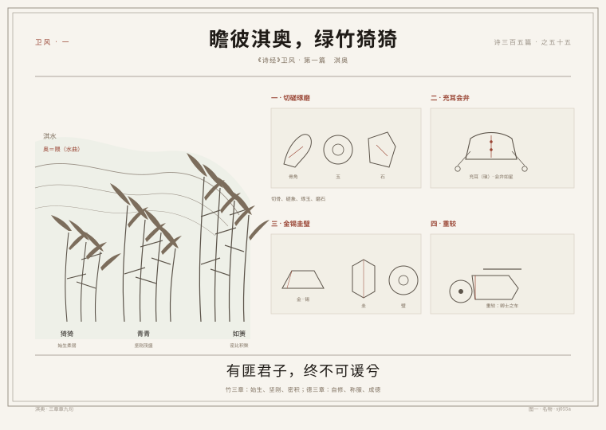
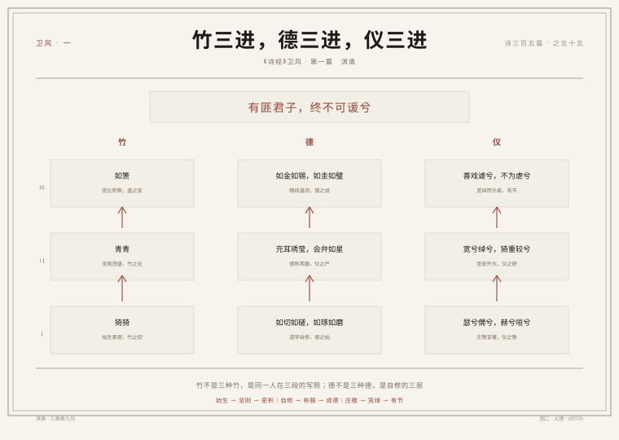

第五十五篇 淇奥
卫风 · 之一 SJ055
朗读 · 普通话
依经文原文朗读，章次不读出；配古琴底乐，不改速、不加拖腔。全库同一音色（豆包 TTS），非播音员录制。
一 解题
诗三判：
- 谁在说：卫人。美武公，不是自美；「有匪君子」是第三人称。
- 说什么事：淇水隈曲，绿竹三章；由竹之始生、坚刚、密积，写君子之德：学问自修、服饰尊严、德成宽广；末以「善戏谑兮，不为虐兮」收。
- 为何编在此：卫风首篇。以武公之德开卷，下接《考槃》刺庄公；一美一刺，卫之盛衰见。
《毛序》：「《淇奥》，美武公之德也。有文章，又能听其规谏，以礼自防，故能入相于周，美而作是诗也。」
朱子《诗集传》：「兴也。淇，水名。奥，隈也。绿，色也。淇上多竹，汉世犹然，所谓淇园之竹是也。……卫人美武公之德，而以绿竹始生之美盛，兴其学问自修之进益也。」
本库的看法：这首诗不是夸一个完人，是写一个「一直在修」的人。
竹三章不是三种竹，是一个人从始生到坚刚到密积的三段；「不可谖」不是赞美词，是结果：修到极处，民不能忘。
二 经文
第一章
瞻彼淇奥，绿竹猗猗。有匪君子，如切如磋，如琢如磨。瑟兮僩兮，赫兮咺兮。有匪君子，终不可谖兮。
第二章
瞻彼淇奥，绿竹青青。有匪君子，充耳琇莹，会弁如星。瑟兮僩兮，赫兮咺兮。有匪君子，终不可谖兮。
第三章
瞻彼淇奥，绿竹如箦。有匪君子，如金如锡，如圭如璧。宽兮绰兮，猗重较兮。善戏谑兮，不为虐兮。
分章：三章，章九句。
章末韵：
- 一章：猗、磋、磨（歌部）；僩、咺、谖（元部）。
- 二章：青、莹、星（耕部）；僩、咺、谖（元部）。
- 三章：箦、锡、璧（锡部）；绰、较、谑、虐（药部）。
三 韵读
| 一 |
猗、磋、磨；僩、咺、谖 |
歌部；元部（平上通） |
| 二 |
青、莹、星；僩、咺、谖 |
耕部；元部 |
| 三 |
箦、锡、璧；绰、较、谑、虐 |
锡部；药部 |
一章九句两韵：前五句以猗、磋、磨收，后四句以僩、咺、谖收。二章同。三章前五句以箦、锡、璧收，后四句以绰、较、谑、虐收。韵随物转：竹始生时声缓，竹坚刚时声清，竹密积时声入。
「猗」古音于戈反，属歌部；「僩」遐板反；「咺」况晚反；「谖」况元反；「会」古外反；「较」古岳反。皆从《诗本音》，不标叶音。
四 字义与名物
字义
- 淇奥（yù）——淇水隈曲处；奥，隈也。
- 绿竹——毛传：绿，王刍；竹，萹竹。朱子：绿，色也；淇上多竹，即淇园之竹。两存。
- 猗猗（yī）——美盛；始生柔弱而美盛。
- 青青——茂盛；坚刚茂盛。
- 如箦（zé）——密比如栈；积，盛之至。
- 有匪——匪，斐通；文章貌，有文采。
- 切磋琢磨——治骨曰切，象曰磋，玉曰琢，石曰磨；喻学问自修。《大学》分「道学」「自修」。
- 瑟——矜庄貌。
- 僩（xiàn）——毛传：宽大；朱子：威严；《韩诗》：美貌；《说文》：武貌。
- 赫——光明；明德外见。
- 咺（xuān）——宣著；威仪容止宣著。
- 谖（xuān）——忘。
- 充耳——瑱；悬于冠两旁的塞耳之玉。
- 琇莹（xiù yíng）——美石。
- 会弁（kuài
biàn）——皮弁；会，缝；以玉饰皮弁缝中。
- 金锡——金与锡，炼之精纯。
- 圭璧——礼玉；圭尖首，璧圆孔；温润。
- 宽绰——宽宏、开大。
- 猗重较（yǐ chóng
jué）——猗，依；重较，卿士之车；较，车厢两旁上出轼的横木。朱子以「猗」为叹辞。
- 戏谑——开玩笑；虐，伤害。
- 武公——卫武公，名和；入相于周；《国语》载其九十五岁犹箴儆于国。
名物
- 淇——水名，卫地；《淇奥》之「奥」即淇水弯曲处。
- 绿竹——图取淇园之竹；毛传另作王刍、萹竹，是两种草。
- 充耳、会弁——冠饰；充耳悬玉，皮弁缝中缀玉如星。
- 圭、璧——圭长条尖首；璧圆平孔；皆礼玉。
- 重较——车；车厢两旁横木高出轼，卿士所乘。
- 金、锡——金属；金锡精炼，喻德之精纯。
- 切磋琢磨——刀斧、鑢锡、槌凿、沙石；治骨角、玉石的工序。
五 今译
第一章
看那淇水隈曲处，绿竹猗猗美盛。那位有文采的君子，如骨角切磋、如玉石琢磨。庄敬而宽大，光明而宣著。那位有文采的君子，终究不能忘。
第二章
看那淇水隈曲处，绿竹青青坚刚。那位有文采的君子，充耳琇莹，会弁如星。庄敬而宽大，光明而宣著。那位有文采的君子，终究不能忘。
第三章
看那淇水隈曲处，绿竹密比如箦。那位有文采的君子，如金锡精纯，如圭璧温润。宽宏而开大，倚着卿士的重较。善于戏谑，却不伤害人。
六 章旨
一章：竹始生；德之初；切磋琢磨；仪之庄敬；不可忘。
二章：竹坚刚；德之称服；充耳会弁；仪之宣著；不可忘。
三章：竹密积；德之成；金锡圭璧；仪之宽绰；戏谑有节；不可忘。
三章合看：竹三进，德三进，仪三进；一进一进，不是一跳就到。
七 诗教
- 兴：以绿竹起兴；竹之三态应德之三进。朱子说「以绿竹始生之美盛，兴其学问自修之进益」，是兴；不是比。
- 观：观武公之德；也观「美」的分寸：美其身，不美其权力。
- 群：可与「自修者」同群；可与「在位而听谏者」同群。
- 怨：此诗无怨；若强说，怨在「不可谖」——民不能忘，是德之报，不是诗人之怨。
八 分寸与边界
- 不可把「绿竹」只当风景。它是兴；三章三态，对应德之三进。
- 不可把「有匪君子」当泛泛完人。毛序、朱子皆指武公；美的是「有文章、能听谏、以礼自防」。
- 不可把「切磋琢磨」只当工匠活。《大学》以「道学」「自修」解；它的落点是修德，不是制器。
- 不可把「善戏谑兮」当轻佻。下一句「不为虐兮」是节；没有「不为虐」，戏谑就成虐。
- 不可把「美武公」当无保留颂圣。毛诗正义在疏中亦载武公赂士袭攻共伯、杀兄篡国，而以为「逆取顺守」；美其德流于民，不掩其取得。
九 存疑
- 诗旨与作者：毛序美武公；朱子从之。或疑诗作于武公身后，是卫人追美；诗中「终不可谖」确有追思口吻。本库从毛、朱，兼记追美说。
- 文字异文：「匪」或作「斐」；「青青」或作「菁菁」；「咺」或作「喧」「宣」；「谖」或作「諠」；「猗」或作「倚」；「会」或作「桧」。皆音近义通。
- 名物歧解：绿竹，毛传作王刍、萹竹，朱子作绿色之竹；奥，毛、朱皆训隈，陆玑以为水名；僩，毛传宽大，朱子威严，《韩诗》美貌，《说文》武貌；猗，毛传依，朱子叹辞；重较，毛、朱皆谓卿士之车，孔疏以武公本爵推为侯伯之车。
- 年代与作者：武公约前八一二至前七五八年在位，前八五三年前后生；诗当作于其入相后。毛序「入相于周」不指幽王、平王；孔疏两存。武公袭攻共伯、杀兄篡国，与诗之美德并存，是《诗》「逆取顺守」之例，不可掩。
- 编次：卫风何以首《淇奥》？一说是美武公开卷；一说是追美，故以「不可谖」领起。下篇《考槃》刺庄公不能继业，一美一刺，盛衰对见。
十 跨典
- 《大学》：「如切如磋者，道学也；如琢如磨者，自修也；瑟兮僩兮者，恂栗也；赫兮咺兮者，威仪也；有斐君子，终不可谖兮者，道盛德至善，民之不能忘也。」此章之训，尽在其中。
- 《国语·楚语上》：「昔卫武公年数九十有五矣，犹箴儆于国……作《懿》戒以自儆也。及其没也，谓之睿圣武公。」可与「听其规谏」互证。
- 《大雅·抑》：毛序「卫武公刺厉王，亦以自警也」。一诗自警，一诗美人；自警者严，美人者宽。
- 《卫风·考槃》：下篇刺庄公「不能继先公之业，使贤者退而穷处」。武公之德一断，卫风即转入衰。
- 《论语·学而》：「学而时习之」；「如切如磋」正是「时习」的物象。不是一次成器，是反复加工。
十一 双卡与图
双卡五对：
| 淇奥（淇水隈曲） |
淇奥（误作人名） |
| 有匪君子（有文采） |
有匪（土匪） |
| 切磋琢磨（自修） |
切磋（只作争论） |
| 充耳琇莹（冠饰） |
充耳不闻（误） |
| 重较（卿士之车） |
重较（重复比较，误） |

图一 · 淇奥绿竹与君子之器 名物图

图二 · 竹三进，德三进，仪三进 义理图
读图三处：
- 三丛竹：图一左侧淇水隈曲，三丛竹自下而上：猗猗、青青、如箦。
- 四器：图一右侧四组物：切磋琢磨、充耳会弁、金锡圭璧、重较。
- 三进：图二竹、德、仪三列并进；顶上「不可谖」是结果，不是起点。